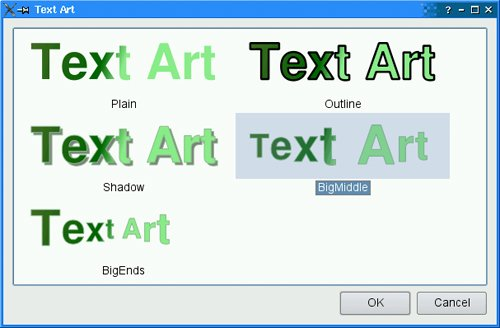

Making Applications Plugin-AwareAn application plugin is a dynamic library that implements one or more interfaces. An interface is a class that consists exclusively of pure virtual functions. The communication between the application and the plugins is done through the interface's virtual table. In this section, we will focus on how to use a plugin in a Qt application through its interfaces, and in the next section we will show how to implement a plugin. To provide a concrete example, we will create the simple Text Art application shown in Figure 19.3. The text effects are provided by plugins; the application retrieves the list of text effects provided by each plugin and iterates over them to show each one as an item in a QListWidget. Figure 19.3. The Text Art applicationThe Text Art application defines one interface:
class TextArtInterface
{
public:
virtual ~TextArtInterface() { }
virtual QStringList effects() const = 0;
virtual QPixmap applyEffect(const QString &effect,
const QString &text,
const QFont &font, const QSize &size,
const QPen &pen,
const QBrush &brush) = 0;
};
Q_DECLARE_INTERFACE(TextArtInterface,
"com.software-inc.TextArt.TextArtInterface/1.0")
An interface class normally declares a virtual destructor, a virtual function that returns a QStringList, and one or more other virtual functions. The destructor is there primarily to silence the compiler, which might otherwise complain about the lack of a virtual destructor in a class that has virtual functions. In this example, the effects() function returns a list of the text effects the plugin can provide. We can think of this list as a list of keys. Every time we call one of the other functions, we pass one of these keys as first argument, making it possible to implement multiple effects in one plugin. At the end, we use the Q_DECLARE_INTERFACE() macro to associate an identifier to the interface. The identifier normally has four components: an inverted domain name specifying the creator of the interface, the name of the application, the name of the interface, and a version number. Whenever we alter the interface (for example, by adding a virtual function or changing the signature of an existing function), we must remember to increase the version number; otherwise, the application might crash trying to access an outdated plugin. The application is implemented in a class called TextArtDialog. We will only show the code relevant to making it plugin-aware. Let's start with the constructor:
TextArtDialog::TextArtDialog(const QString &text, QWidget *parent)
: QDialog(parent)
{
listWidget = new QListWidget;
listWidget->setViewMode(QListWidget::IconMode);
listWidget->setMovement(QListWidget::Static);
listWidget->setIconSize(QSize(260, 80));
...
loadPlugins();
populateListWidget(text);
...
}
The constructor creates a QListWidget to list the available effects. It calls the private function loadPlugins() to find and load any plugins that implement the TextArtInterface and populates the list widget accordingly by calling another private function, populateListWidget().
void TextArtDialog::loadPlugins()
{
QDir pluginDir(QApplication::applicationDirPath());
#if defined(Q_OS_WIN)
if (pluginDir.dirName().toLower() == "debug"
|| pluginDir.dirName().toLower() == "release")
pluginDir.cdUp();
#elif defined(Q_OS_MAC)
if (pluginDir.dirName() == "MacOS") {
pluginDir.cdUp();
pluginDir.cdUp();
pluginDir.cdUp();
}
#endif
if (!pluginDir.cd("plugins"))
return;
foreach (QString fileName, pluginDir.entryList(QDir::Files)) {
QPluginLoader loader(pluginDir.absoluteFilePath(fileName));
if (TextArtInterface *interface =
qobject_cast<TextArtInterface *>(loader.instance()))
interfaces.append(interface);
}
}
In loadPlugins(), we attempt to load all the files in the application's plugins directory. (On Windows, the application's executable usually lives in a debug or release subdirectory, so we move one directory up. On Mac OS X, we take the bundle directory structure into account.) If the file we try to load is a Qt plugin that uses the same version of Qt as the application, QPluginLoader::instance() will return a QObject * that points to a Qt plugin. We use qobject_cast<T>() to check whether the plugin implements the TextArtInterface. Each time the cast is successful, we add the interface to the TextArtDialog's list of interfaces (of type QList<TextArtInterface *>). Some applications may want to load two or more different interfaces, in which case the code for obtaining the interfaces would look more like that shown below:
QObject *plugin = loader.instance();
if (TextArtInterface *i = qobject_cast<TextArtInterface *>(plugin))
textArtInterfaces.append(i);
if (BorderArtInterface *i = qobject_cast<BorderArtInterface *>(plugin))
borderArtInterfaces.append(i);
if (TextureInterface *i = qobject_cast<TextureInterface *>(plugin))
textureInterfaces.append(i);
The same plugin may successfully cast to more than one interface pointer, since it is possible for plugins to provide multiple interfaces by using multiple inheritance.
void TextArtDialog::populateListWidget(const QString &text)
{
QSize iconSize = listWidget->iconSize();
QPen pen(QColor("darkseagreen"));
QLinearGradient gradient(0, 0, iconSize.width() / 2,
iconSize.height() / 2);
gradient.setColorAt(0.0, QColor("darkolivegreen"));
gradient.setColorAt(0.8, QColor("darkgreen"));
gradient.setColorAt(1.0, QColor("lightgreen"));
QFont font("Helvetica", iconSize.height(), QFont::Bold);
foreach (TextArtInterface *interface, interfaces) {
foreach (QString effect, interface->effects()) {
QListWidgetItem *item = new QListWidgetItem(effect,
listWidget);
QPixmap pixmap = interface->applyEffect(effect, text, font,
iconSize, pen,
gradient);
item->setData(Qt::DecorationRole, pixmap);
}
}
listWidget->setCurrentRow(0);
}
The populateListWidget() function begins by creating some variables to pass to the applyEffect() function, in particular a pen, a linear gradient, and a font. It then iterates over every TextArtInterface that was found by loadPlugins(). For each effect provided by each interface, a new QListWidgetItem is created with its text set to the name of the effect it represents, and a QPixmap is created using applyEffect(). In this section we have seen how to load plugins by calling loadPlugins() in the constructor, and how to make use of them in populateListWidget(). The code copes gracefully whether there are no plugins providing TextArtInterfaces, just one, or more than one. Furthermore, additional plugins could be added later: Every time the application starts up it loads whatever plugins it finds that provide the interfaces it wants. This makes it easy to extend the application's functionality without changing the application itself. |